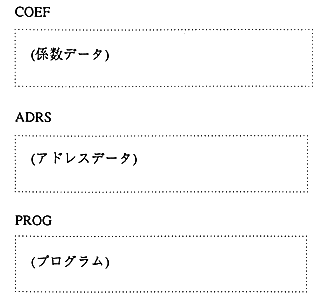

--------------------------------------------------------------------● The format of one line in the coefficient / address data part is as follows.
--------------------------------------------------------------------
-------------------------------------------------------------------- [Internal RAM address]: [Data]: [Symbol name]: [Notation mode / Initial value] -------------------------------------------------------------------- * The [Notation mode / Initial value] part is to the right of the coefficient / address constant definition part of the source code. The same format as the side.● One-line format of program part
-------------------------------------------------------------------- [Program RAM address]: [Data] -------------------------------------------------------------------- * In the [Data] part, 64-bit data is divided into four blocks every 16 bits. Is represented by 4 hexadecimal characters. In addition, a blank character is inserted between each block. Please refer to the example of the executable file shown below.